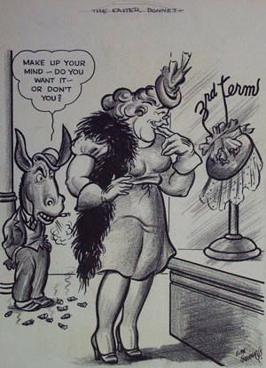
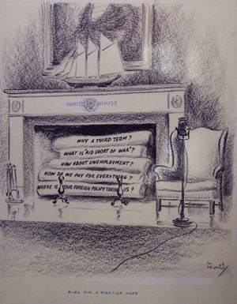

|

|

|
| The Easter Bonnet by Rube Goldberg | Fuel for a Fireside Chat by Ross A. Lewis |
The political atmosphere leading up to the Democratic National Convention in 1940 was tense. Many wondered if President Franklin Delano Roosevelt would seek an unprecedented third term and, if he did, would his party and the country support him. These cartoons provide a window into that moment in history before FDR sought and won his third (and subsequently a fourth) term in the White House. In them, they illustrate and lampoon FDR's decision-making process, the wisdom of a third term, the conflict within the Democratic party and their clash with their Republican opponents, possible foreign perspectives, and finally, an examination of the essential legitimacy of the campaign for a third term.
Despite two terms in office, FDR believed that he still had much
to accomplish. However, as we can see in Rube Goldberg's cartoon "The
Easter Bonnet," it was not clear to the party, and thus the country,
if he was in fact going to run. Ross A. Lewis, in his "Fuel For a Fireside
Chat" asks questions that reflect the public's wariness of allowing FDR
a third term. The title refers to FDR's popular radio addresses that were
meant to inform and reassure the public.